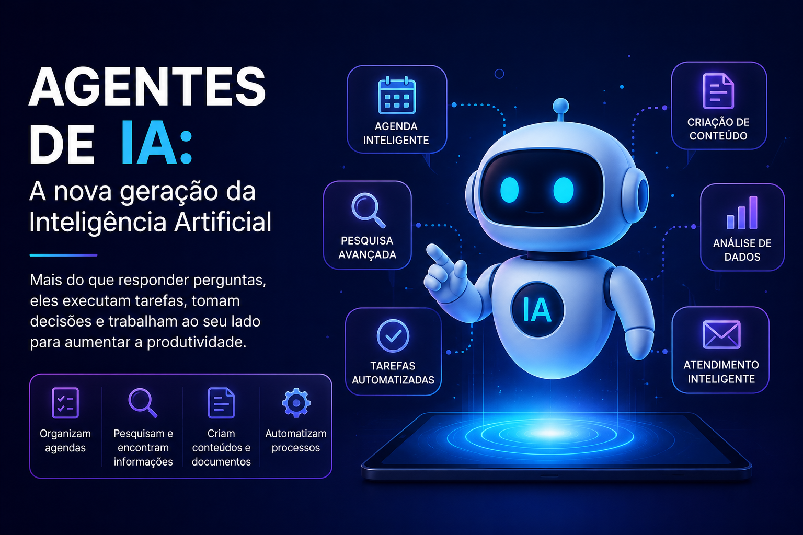
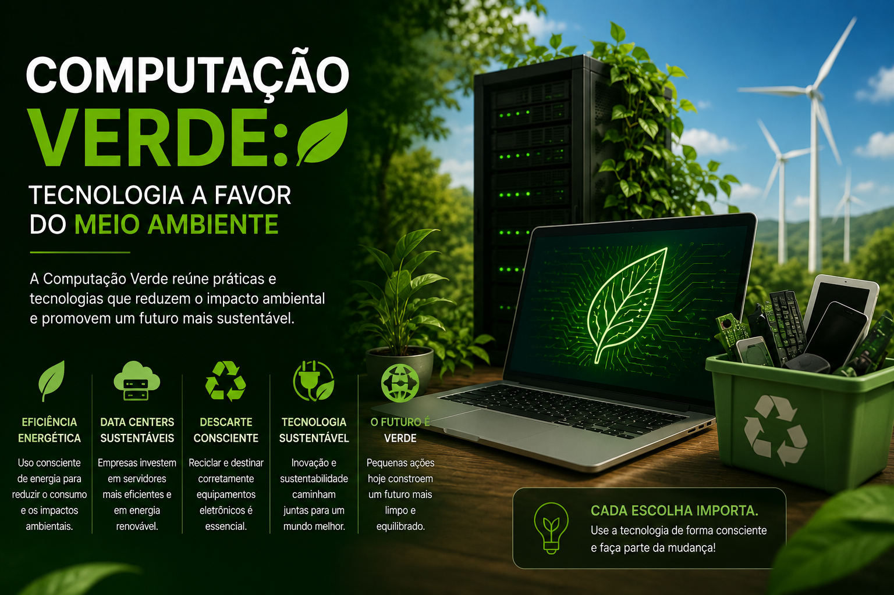

Meu primeiro post!
Publicado por Emanuelle Almeida
Bem-vindo(a) ao ManuTech! Este é um espaço onde vou compartilhar conhecimentos, novidades, dicas e curiosidades sobre tecnologia.
Seu espaço para descobrir mais sobre programação e tecnologia.
Publicado por Emanuelle Almeida
Bem-vindo(a) ao ManuTech! Este é um espaço onde vou compartilhar conhecimentos, novidades, dicas e curiosidades sobre tecnologia.

Publicado por Emanuelle Almeida
A Inteligência Artificial (IA) faz parte da rotina de milhões de pessoas e está presente em aplicativos, assistentes virtuais, hospitais, escolas e empresas. Essa tecnologia permite que máquinas aprendam, analisem informações e realizem tarefas de forma rápida e eficiente.
Além de facilitar o dia a dia, a IA contribui para avanços na saúde, educação e no mercado de trabalho, automatizando processos e auxiliando na tomada de decisões. No entanto, seu crescimento também traz desafios, como a proteção de dados e o uso responsável da tecnologia.
Com a evolução constante da IA, a expectativa é que ela continue transformando a sociedade, tornando diversos serviços mais inteligentes, acessíveis e inovadores.

Publicado por Emanuelle Almeida
A Inteligência Artificial está evoluindo rapidamente, e uma das maiores novidades é o surgimento dos agentes de IA. Diferentemente dos chatbots tradicionais, esses sistemas conseguem executar tarefas mais complexas, como organizar agendas, pesquisar informações, criar documentos e até automatizar processos de trabalho.
Essa tecnologia já está sendo utilizada por empresas para aumentar a produtividade e reduzir o tempo gasto em atividades repetitivas. Além disso, estudantes e profissionais também podem utilizar agentes de IA para auxiliar na organização de estudos, produção de conteúdos e resolução de problemas.
Apesar dos benefícios, é importante utilizar essa tecnologia com responsabilidade, verificando sempre as informações fornecidas e protegendo os dados pessoais. Com o avanço da Inteligência Artificial, os agentes inteligentes prometem transformar a maneira como trabalhamos, estudamos e nos comunicamos.

Publicado por Emanuelle Almeida
A tecnologia também pode contribuir para a preservação do meio ambiente. A chamada Computação Verde reúne práticas que buscam reduzir o consumo de energia, diminuir a emissão de poluentes e incentivar o descarte correto de equipamentos eletrônicos.
Grandes empresas de tecnologia têm investido em data centers mais eficientes, no uso de fontes de energia renovável e em programas de reciclagem de dispositivos. Essas iniciativas ajudam a diminuir o impacto ambiental sem comprometer o desempenho dos serviços digitais.
Além das empresas, os usuários também podem fazer a diferença, prolongando a vida útil de seus equipamentos, economizando energia e descartando eletrônicos em locais apropriados. A inovação e a sustentabilidade caminham juntas, mostrando que é possível desenvolver novas tecnologias de forma mais consciente.
Fonte: IBM – Sustentabilidade